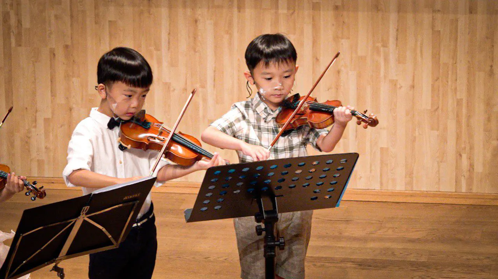
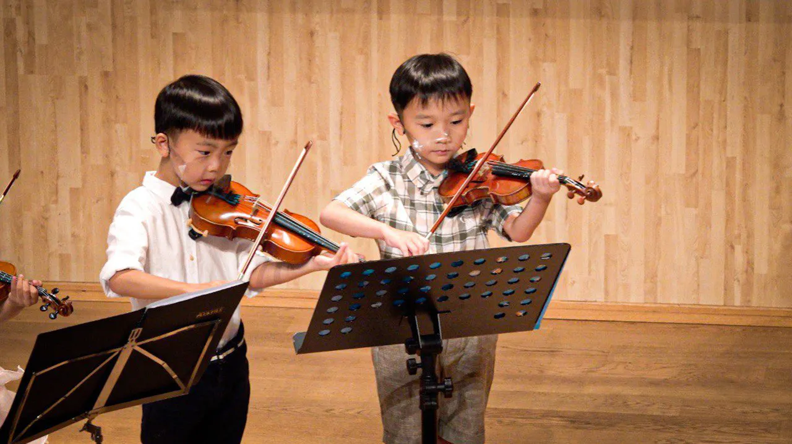

班際小提琴課程
由淺入深教授小提琴基礎，包括演奏姿勢、基礎手部手指訓練及協調、閱讀樂譜、基礎樂理知識和音樂歷史等，以認識音樂和提升基本功為目標。小組形式上課能營造濃厚學習氣氛，群體學習增加互動性，營造積極和正面的學習氛圍。
班際小提琴課程特色
小組課程
4-6人一組，學習氣氛積極濃厚
家長參與
家長陪同上課，充分了解課程與教學方法，確保在家有效練習
穩固基礎
着重「基本功」，不走捷徑歪路，讓孩子在音樂路上走得更高更遠
自編教材
綜合各大音樂教學法及教材，
確保課堂內容豐富成效顯著
成果分享
優先受邀參與每年音樂成果
分享會及對外公開表演
班際級別
New : 適合三歲半或以上，未有任何音樂基礎小朋友
Beginner : 適合學習小提琴半年至一年，未有參加過考試的學生
Advance beginner : 學琴一年或以上，程度等同 ABRSM grade 2-3 學生
Intermediate : 學琴二年或以上，程度等同 ABRSM grade 4-5學生
Advance : 學琴三年或以上，程度等同 ABRSM grade 5+學生
Elite : 程度等同 ABRSM grade 8+ 學生
 

FAQ
你們的小提琴老師專業嗎？
有入班要求嗎？
我的孩子想當職業音樂家，你們可以幫助孩子達成願望嗎？
家長評語
起初由學校小提琴興趣班轉過來跟Jamie老師，是希望預備小提琴考試。對於Miss Jamie提議小組加一對一的學習模式有點遲疑⋯⋯抱着姑且一試的心態，不用一個月，我就明白到何謂「基礎」。兩種學習模式相輔相成，從小組學習的基礎應用到考試曲目上非常有效，不再是考試歌一首接一首重複地練習。現在每星期學琴兩次，一次小組，一次一對一，我也不願意回到從前的模式了，因為效果和進度實在相差太遠！
Mrs Chan
Mom of Natalie Chan (7 Yrs)

It was the first music experience for our son so we were nervous at first but Jamie made things very simple and human. She is experienced in teaching young kids and good at communicating with them. I enjoy staying in the lesson and I’m amazed I understand it even I have zero knowledge to music.
Mr Tang
Dad of Nathan Tang (3.5 Yrs)


開啟孩子音樂之路，由學習小提琴開始
請填妥及提交以下表格，我們會有專人聯絡作進一步了解
Oops! Something went wrong while submitting the form.